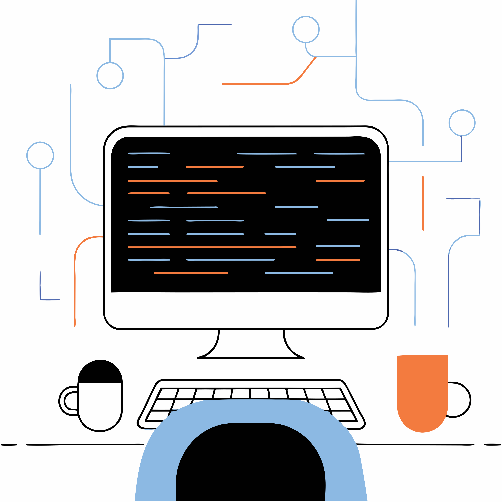

Leren programmeren is als het ontdekken van een nieuwe taal, maar dan eentje waarmee je dingen kunt bouwen. Van simpele websites tot games en apps: met een paar regels code kun je je ideeën tot leven brengen. Het geeft een gevoel van controle en creativiteit dat echt verslavend werkt.
Wat programmeren extra leuk maakt, is het puzzelaspect.🧩 Je komt soms problemen tegen die je moet oplossen, en het moment dat je code eindelijk werkt, voelt geweldig. Je leert logisch denken, problemen opdelen in stukjes en stap voor stap een oplossing bouwen. Het is alsof je je eigen digitale meesterwerken maakt.